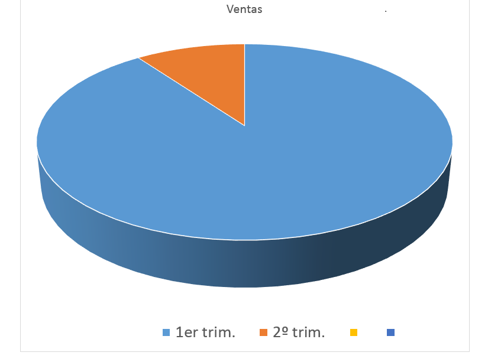

Metodología del tipo de investigación de campo que se ha realizado,
para esta investigación se estudio una problemática a partir de la recolección
y análisis de datos directos de la realidad, por lo que se utilizaron criterios
estadísticos para el procesamiento de la información recolectada.
Este tipo de investigación tiene como característica de técnicas de recopilación el
cuestionario, revistas, encuestas y sondeos los cuales fueron realizados de manera
general a toda la sociedad estudiantil.
De acuerdo con la encuesta que se realizó se encontró que el 90% de la sociedad
estudiantil está apoyando este proyecto ya que son quienes salen beneficiados el
resto no le toma importancia al tema.
 "MÉTODO DE INVESTIGACIÓN"
Con el método analítico analizamos cada uno de los elementos que forman parte
del fenómeno que se investiga (la contaminación y escases de agua), procediendo
con su revisión ordenadamente, para determinar causas, efectos y soluciones.
El objetivo de este método es observar y penetrar cada una de las partes del objetivo
que se esta considerando (el proyecto).
"TÉCNICA HE INSTRUMENTO DE INVESTIGACIÓN"
Se utilizo la técnica de investigación cuantitativa para tener un procedimiento de
decisión de señalar, entre ciertas alternativas, usando magnitudes numéricas que
pueden ser tratadas mediante herramientas del campo de la estadísticamente por
medio de sondeos y entrevistas que se precentan en las siguientes graficas con
base a el proyecto; de un 100% que se tiene como alumnos un 60% son mujeres
de entre 15 y 18 años y el 40% son hombres mayores de 15 a 17 años.
"CONCLUSION"
En conclusion se puede asegurar que con ayuda de este proyecto lograremos disminuir
el desperdicio del agua ,haciendo que se utilice la que sera captada de las lluvias
logrando el uso de las tres R ayudando al ecosistema ya que en estos momentos se encuentra
en un estado donde la prioridad es cuidar el medio para mantenerlo con vida.